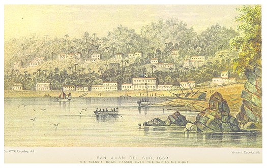

El puerto de San Juan del Sur, está situado en una maravillosa bahía con forma de herradura bordeada de dos montañas, en el departamento de Rivas. A un par de horas de la capital, San Juan del Sur es un destino obligatorio para los cruceros provenientes de EE.UU., Canadá y Europa y para los todos los turistas que visitan Nicaragua.
San Juan del Sur es un Puerto de pescadores, ahora hogar del mundo, que ofrece todo tipo de albergues y cómodos hoteles. Su preciosa bahía y su gente hospitalaria y alegre hacen de este pueblo un lugar especial y mágico que actualmente representa un símbolo de desarrollo turístico, con una gran oferta gastronómica y hotelera.
En sus playas se goza del viento, deportes acuáticos, senderismo, canopy, buceo y la práctica de surfing y la belleza escénica de sus atardeceres. Durante la Semana Santa se convierte en un derroche de espectáculos, conciertos y fiestas nocturnas. Estos eventos se les conocen como “Noches de Playa y Baños de Sol”.
Cercanas al puerto también se pueden visitar playas tales como Marsella, Majagual, Ocotal, Remanso, y Ostional, entre otras, así como la Reserva de Vida Silvestre “La Flor”. La Playa La Flor es una de las pocas en el mundo que recibe anualmente el arribo de las tortugas de la especie Paslama entre los meses de Julio a Enero. Es posible acampar en la playa para observar el desove de estas tortugas.
Playa El Coco, a 20 minutos de San Juan del Sur, es una enorme playa con oleaje tranquilo y arena fina, definitivamente un sitio para relajarse y disfrutar del paisaje y la belleza natural. En esta playa se pueden realizar paseos a caballo, juegos de playa, y observar aves y naturaleza.
Playa Majagual, es una playa tranquila apropiada para el turista que busca relajarse y disfrutar de lo impresionante del mar, posee una amplia costa con inmensos farallones y atardeceres maravillosos, es propicia para paseos en bote y pesca.
Playa Maderas, situada a solo 30 minutos de San Juan del Sur, es uno de los mejores destinos para practicar el surf, ya que ofrece un oleaje potente y apropiado.